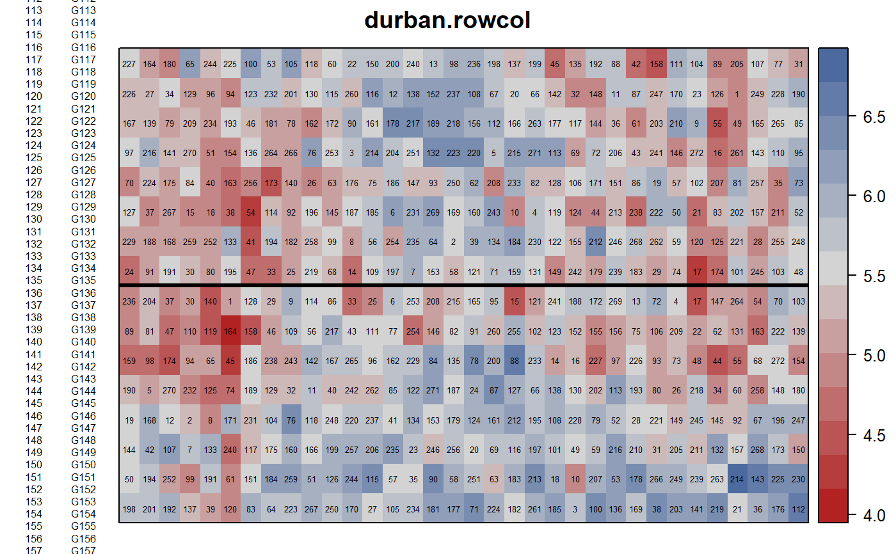
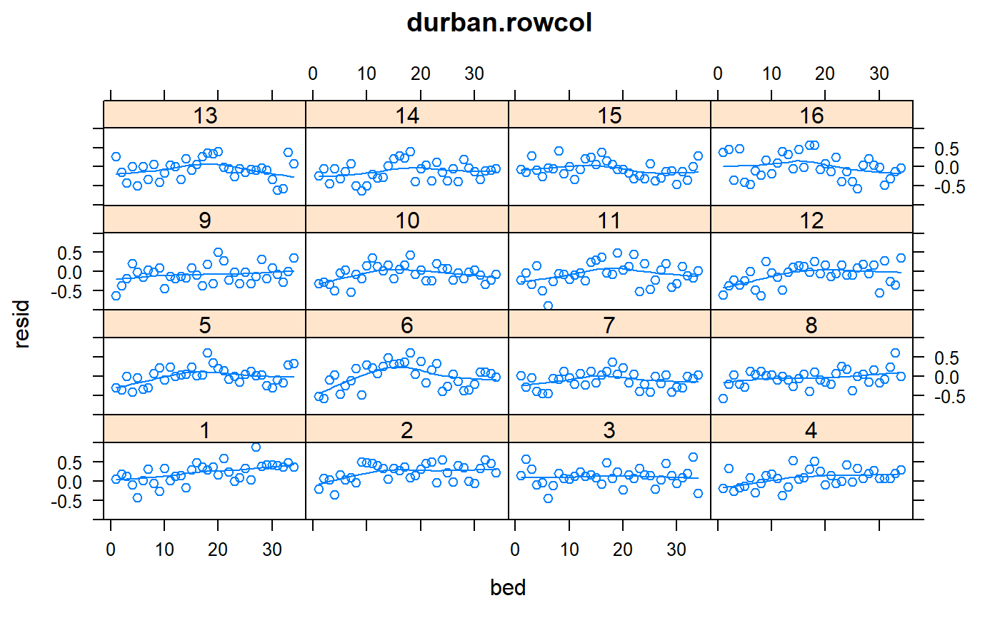
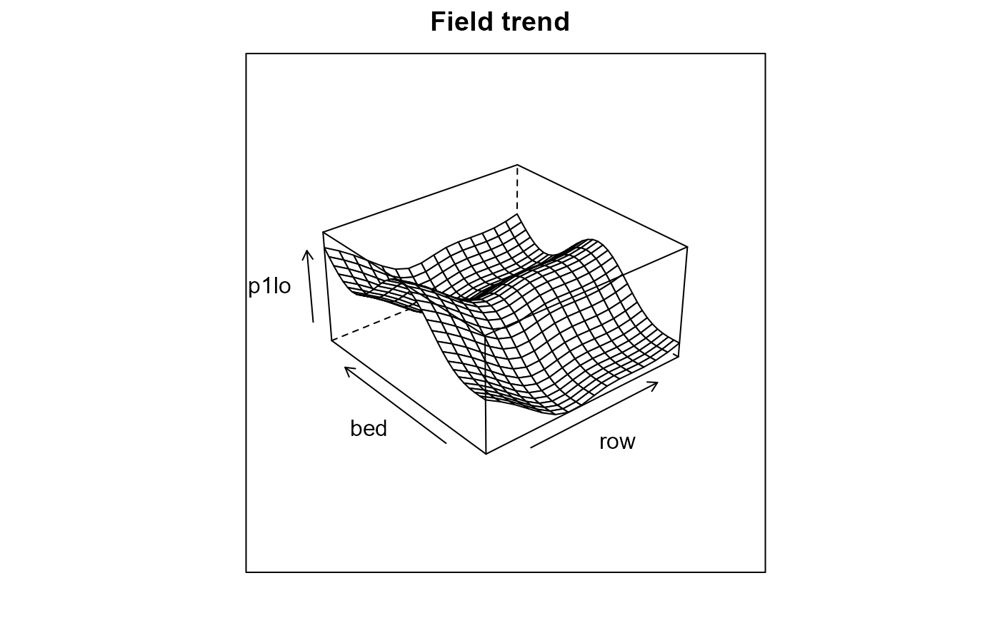
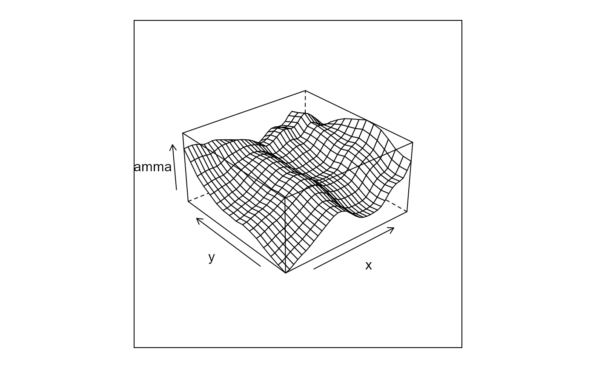
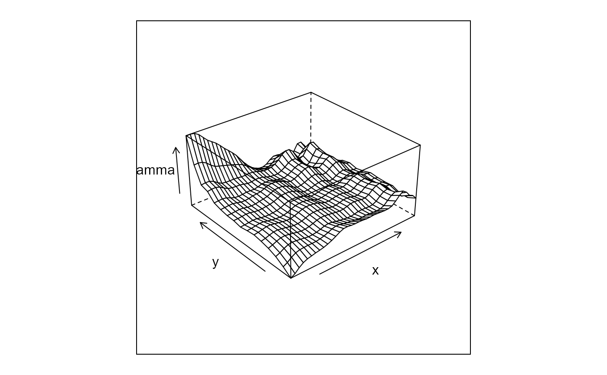
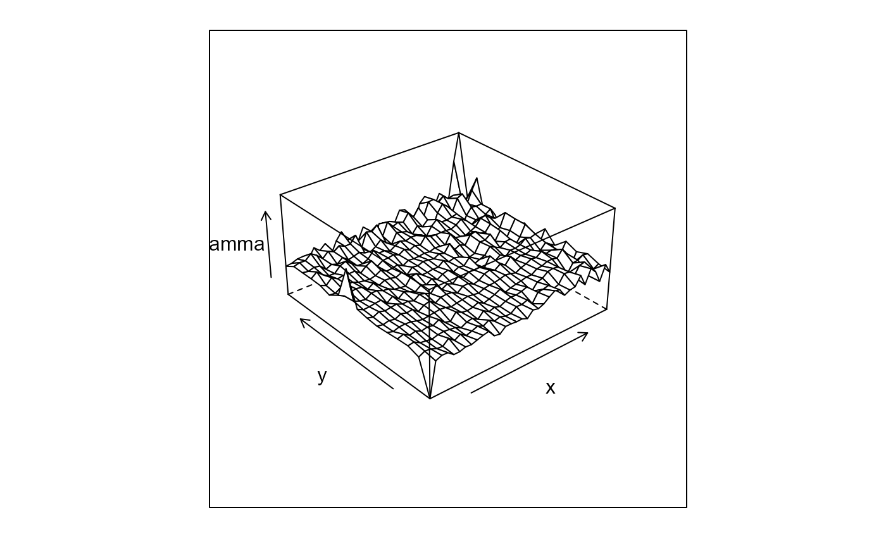

durban.rowcol.RdRow-column experiment of spring barley, many varieties
A data frame with 544 observations on the following 5 variables.
rowrow
bedbed (column)
reprep, 2 levels
gengenotype, 272 levels
yieldyield, tonnes/ha
Spring barley variety trial of 272 entries (260 new varieties, 12 control). Grown at the Scottish Crop Research Institute in 1998. Row-column design with 2 reps, 16 rows (north/south) by 34 beds (east/west). The land sloped downward from row 16 to row 1. Plot yields were converted to tonnes per hectare.
Plot dimensions are not given.
Used with permission of Maria Durban.
Durban, Maria and Hackett, Christine and McNicol, James and Newton, Adrian and Thomas, William and Currie, Iain. 2003. The practical use of semiparametric models in field trials, Journal of Agric Biological and Envir Stats, 8, 48-66. https://doi.org/10.1198/1085711031265
Edmondson, Rodney (2020). Multi-level Block Designs for Comparative Experiments. J of Agric, Biol, and Env Stats. https://doi.org/10.1007/s13253-020-00416-0
# \dontrun{
library(agridat)
data(durban.rowcol)
dat <- durban.rowcol
libs(desplot)
desplot(dat, yield~bed*row,
out1=rep, num=gen, # aspect unknown
main="durban.rowcol")

# Durban 2003 Figure 1
m10 <- lm(yield~gen, data=dat)
dat$resid <- m10$resid
## libs(lattice)
## xyplot(resid~row, dat, type=c('p','smooth'), main="durban.rowcol")
## xyplot(resid~bed, dat, type=c('p','smooth'), main="durban.rowcol")
# Figure 3
libs(lattice)
xyplot(resid ~ bed|factor(row), data=dat,
main="durban.rowcol",
type=c('p','smooth'))

# Figure 5 - field trend
# note, Durban used gam package like this
# m1lo <- gam(yield ~ gen + lo(row, span=10/16) + lo(bed, span=9/34), data=dat)
libs(mgcv)
#> Loading required package: nlme
#>
#> Attaching package: 'nlme'
#> The following object is masked from 'package:dplyr':
#>
#> collapse
#> This is mgcv 1.8-38. For overview type 'help("mgcv-package")'.
m1lo <- gam(yield ~ gen + s(row) + s(bed, k=5), data=dat)
new1 <- expand.grid(row=unique(dat$row),bed=unique(dat$bed))
new1 <- cbind(new1, gen="G001")
p1lo <- predict(m1lo, newdata=new1)
libs(lattice)
wireframe(p1lo~row+bed, new1, aspect=c(1,.5), main="Field trend")

libs(asreml) # asreml4
dat <- transform(dat, rowf=factor(row), bedf=factor(bed))
dat <- dat[order(dat$rowf, dat$bedf),]
m1a1 <- asreml(yield~gen + lin(rowf) + lin(bedf), data=dat,
random=~spl(rowf) + spl(bedf) + units,
family=asr_gaussian(dispersion=1))
#> Offline License checked out Fri Dec 17 15:16:56 2021
#> Model fitted using the sigma parameterization.
#> ASReml 4.1.0 Fri Dec 17 15:16:56 2021
#> Spline: design points closer than 0.0015 have been merged.
#> Spline: design points closer than 0.0033 have been merged.
#> LogLik Sigma2 DF wall cpu
#> 1 -120.891 1.0 270 15:16:56 0.1 (1 restrained)
#> 2 -119.429 1.0 270 15:16:56 0.1 (1 restrained)
#> 3 -119.337 1.0 270 15:16:56 0.1 (1 restrained)
#> 4 -119.330 1.0 270 15:16:57 0.1 (1 restrained)
#> 5 -119.330 1.0 270 15:16:57 0.1
m1a2 <- asreml(yield~gen + lin(rowf) + lin(bedf), data=dat,
random=~spl(rowf) + spl(bedf) + units,
resid = ~ar1(rowf):ar1(bedf))
#> Model fitted using the gamma parameterization.
#> ASReml 4.1.0 Fri Dec 17 15:16:57 2021
#> Spline: design points closer than 0.0015 have been merged.
#> Spline: design points closer than 0.0033 have been merged.
#> LogLik Sigma2 DF wall cpu
#> 1 96.2641 0.0728538 270 15:16:57 0.2
#> 2 99.9959 0.0455420 270 15:16:57 0.2 (2 restrained)
#> 3 111.7824 0.0939540 270 15:16:57 0.2
#> 4 114.3283 0.0725701 270 15:16:57 0.1
#> 5 114.8798 0.0621998 270 15:16:57 0.2
#> 6 115.1073 0.0575968 270 15:16:58 0.1
#> 7 115.2248 0.0558544 270 15:16:58 0.1
#> 8 115.2833 0.0555463 270 15:16:58 0.2
#> 9 115.3120 0.0558563 270 15:16:58 0.1
#> 10 115.3273 0.0563693 270 15:16:58 0.1
#> 11 115.3362 0.0568967 270 15:16:58 0.2
#> 12 115.3417 0.0573770 270 15:16:58 0.2
#> 13 115.3452 0.0577936 270 15:16:59 0.2
#> Warning: Log-likelihood not converged
#> Warning: Some components changed by more than 1% on the last iteration.
m1a2 <- update(m1a2)
#> Model fitted using the gamma parameterization.
#> ASReml 4.1.0 Fri Dec 17 15:16:59 2021
#> Spline: design points closer than 0.0015 have been merged.
#> Spline: design points closer than 0.0033 have been merged.
#> LogLik Sigma2 DF wall cpu
#> 1 115.347 0.0581463 270 15:16:59 0.2
#> 2 115.348 0.0582390 270 15:16:59 0.2
#> 3 115.349 0.0585176 270 15:16:59 0.2
#> 4 115.350 0.0587488 270 15:16:59 0.2
#> 5 115.351 0.0589395 270 15:16:59 0.2
#> 6 115.351 0.0590963 270 15:17:00 0.1
#> 7 115.351 0.0592248 270 15:17:00 0.1
m1a3 <- asreml(yield~gen, data=dat, random=~units,
resid = ~ar1(rowf):ar1(bedf))
#> Model fitted using the gamma parameterization.
#> ASReml 4.1.0 Fri Dec 17 15:17:00 2021
#> LogLik Sigma2 DF wall cpu
#> 1 45.6323 0.120599 272 15:17:00 0.0
#> 2 58.3809 0.047543 272 15:17:00 0.0 (2 restrained)
#> 3 110.6551 0.116261 272 15:17:00 0.0
#> 4 116.9931 0.099641 272 15:17:00 0.0
#> 5 120.3275 0.096781 272 15:17:00 0.0
#> 6 121.2251 0.114524 272 15:17:00 0.0
#> 7 121.2782 0.124018 272 15:17:00 0.0
#> 8 121.2798 0.124599 272 15:17:00 0.0
# Figure 7
libs(lattice)
v7a <- asr_varioGram(x=dat$bedf, y=dat$rowf, z=m1a3$residuals)
wireframe(gamma ~ x*y, v7a, aspect=c(1,.5)) # Fig 7a

v7b <- asr_varioGram(x=dat$bedf, y=dat$rowf, z=m1a2$residuals)
wireframe(gamma ~ x*y, v7b, aspect=c(1,.5)) # Fig 7b

v7c <- asr_varioGram(x=dat$bedf, y=dat$rowf, z=m1lo$residuals)
wireframe(gamma ~ x*y, v7c, aspect=c(1,.5)) # Fig 7c

# }